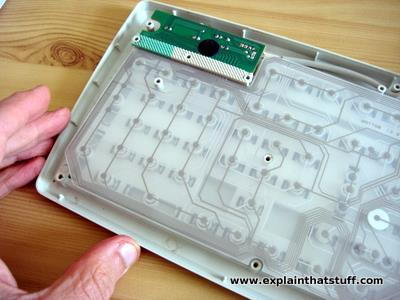

Objectives:
- Understand what a file type is and what a file format is.
- Understand why computers use binary, how to represent binary with hexadecimals, and why it makes sense to do so.
- Take a look at a file's raw data to explain how computers open files.
3: What is a file type?
As we're about to begin exploring the mechanics of computers and programs on a more fundamental level than the average consumer might be used to, it's important to remember that we are navigating culturally specific conventions and abstractions that have been built up over several decades. During this time, humanity has been working on simplifying and making accessible some incredibly complex physics engines which have given us the ability to relate the laws of electromagnetism into our world of signs and symbols. After nearly a century of refining our processes and methods, we now have access to almost unthinkably complex devices which we call things like "graphics processing units", or "Random Access Memory cards", which can fit into your pocket and deliver you pictures of cats from around the world.
So, when we say a .jpg file "is a picture", a .gif file "is an animation", or a .txt file "is a text document", we're relying on conventions that help computers and humans organize and interpret data. But how does a computer actually know what to do with a file? Let's step back and explore how data is stored, and how we've managed to trick silicon and copper into turning electrons into something humans can understand and interact with.
A file type is usually indicated by the extension at the end of a file's name, such as .jpg, .gif, or .txt. This extension suggests to programs which format—the actual structure and encoding of the data—to use when reading the file. However, the extension is only a hint; the true format is defined by how the data is organized inside the file.
Sometimes, different file types share the same format (e.g., .jpg and .jpeg), and sometimes a single file type can refer to many different formats (e.g., .bin for binary data). These conventions are not strict rules. If you try to open a file with the wrong program, the data may be misinterpreted or unreadable.
As new needs arise, developers define new file formats and create the software needed to interpret the raw binary data and present it in a way humans can understand.
3.1: Computer language and number systems
A file format is a set of instructions that a program uses to open, edit, and/or save a file. At the lowest level, all data on a computer is stored as a sequence of 1s and 0s—binary digits, or bits. But how are these bits generated and used?
When you type a character in a .txt document, your keyboard completes a circuit, sending a signal to its microcontroller. This signal is converted into a binary representation—a sequence of 1s and 0s. This description is an abstraction for the physical state of transistors and capacitors in memory cells: a charged capacitor represents a 1, and a discharged one a 0. This is true even for files saved "in the cloud"—somewhere, physical hardware is storing those bits.
 Woodford, Chris, (2022). Computer Keyboards, source
For example, the character a becomes the binary 01100001. Each character is represented by a byte (8 bits). Since binary is a base two system, one byte can represent any value from 00000000 to 11111111 (0 to 255 in decimal).
3.1.1: Counting in binary and hexadecimals
As a side effect of finding ourselves with 10 fingers (usually), humans have developed a base 10 (decimal) numerical system. In base 10, the number "3125" can be thought of as:
Each new digit to the left of the implied decimal point represents an additional \(10^n\), where \(n\) is the digit's index, starting from 0. So 3125 has a 3 in the "thousand" or \(10^3\) place, a 1 in the "hundred" or \(10^2\) place, a 2 in the "ten" or \(10^1\) place, and a 5 in the "one" or \(10^0\) place. This can be continued for digits smaller than 1 as well—on the other side of the decimal point. In this case, \(n \lt 0\), so 0.1 can be similarly represented as (\(1 \cdot 10^{-1}\)), 0.01 as (\(1 \cdot 10^{-2}\)) and so on.
Binary works the same way, but with powers of 2. For example, 01100001 in binary is:
Hexadecimal is base 16, using symbols 0-9 and A-F (A=10, ..., F=15). Each hexadecimal digit represents four bits (a "nibble"), so one byte can be expressed using only two hexadecimal characters. This makes the hexadecimal counting system much more compact in its ability to represent binary data. For example, a can be represented as:
- Binary:
01100001 - Decimal:
97 - Hexadecimal:
61
To summarize: when you type a character, a number between 0 and 255 is stored in your document. Programs use instructions (file formats) to translate these values into something meaningful.
So, how does your computer take a large number saved in memory and turn it into a document you can understand? How do text editors know to open a .txt file and represent 01100001 as the letter a?
3.1.2: Endianness
One of the first steps a computer follows when opening a file relates to endianness, or the order in which bytes of a given "word" (a fixed number of bytes set by the computer's processor) are to be read. There are two types:
- Big-endian (BE): The most significant byte comes first (at the lowest memory address).
- Little-endian (LE): The least significant byte comes first (at the lowest memory address).
Suppose a word is four bytes, and you want to write the number 2024:
| Endianness | Byte Order (hex) |
|---|---|
| Big-endian | 00 00 07 E8 |
| Little-endian | E8 07 00 00 |
If a file is saved using one endianness but opened using another, the bytes will be misinterpreted. Think of it as similar to trying to read a manga from left to right, or a novel starting from the last word on the last page. Many file formats include a byte order mark (BOM) to indicate which endianness to use.
3.2: Opening a file with a text editor
Plain text editors convert binary data into legible characters using encodings such as UTF-8 or ASCII. UTF-8 is the most widely used encoding and is backwards compatible with ASCII for the first 128 characters.
The following table shows how each byte value maps to a character in UTF-8:
 UTF-8 Byte Map, from Wikipedia
UTF-8 Byte Map, from Wikipedia
In this table, the row selects the first hex character of a byte and the column selects the second. For example, the letter a (hex 61) is found at row 6, column 1.
This table helps explain why some bytes in a binary file appear as readable characters when opened in a text editor.
Text editors work well for text files, but what happens if you open file that a text editor wasn't designed for, like a GIF? Let's test it out by using this GIF file from Wikipedia:
 Rotating_earth_(large).gif, from Wikipedia
Rotating_earth_(large).gif, from Wikipedia
3.2.1: Text editor setup
Which text editor to use depends on your operating system:
- Windows: Notepad
- macOS: TextEdit
- Ubuntu/Linux: Gedit (others: Kate, Kwrite, Geany, etc.)
You can usually right-click (or command-click on macOS) a file and select "Open With" to choose your text editor. If you need to use the terminal, search for instructions specific to your OS and editor (e.g., "How to open a file in Notepad using Command Prompt").
Now, open the GIF file in your text editor. The result should appear as a jumble of seemingly nonsensical characters, such as:

Notice that among the symbols, some readable text appears—such as "GIF" at the start (the file signature) and "NETSCAPE2.0" further down. These are parts of the file format specification that are stored as plain ASCII within the binary data.
A program designed to open a GIF file uses all of these bytes—both readable and unreadable—to determine properties like image width, height, frame count, and pixel colors.
While tools like Kaitai and Construct (covered in later sections) don't display the animation directly, they allow you to parse and interpret the raw data, making it possible to extract and use this information in your own programs.
Continue to Kaitai basics to start describing file formats declaratively.